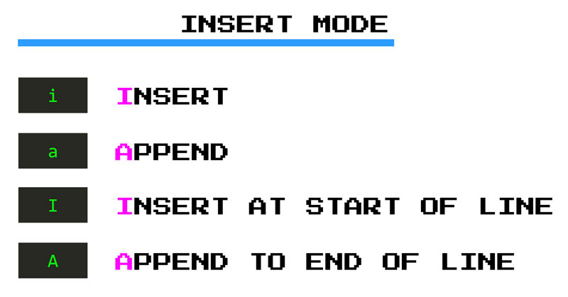
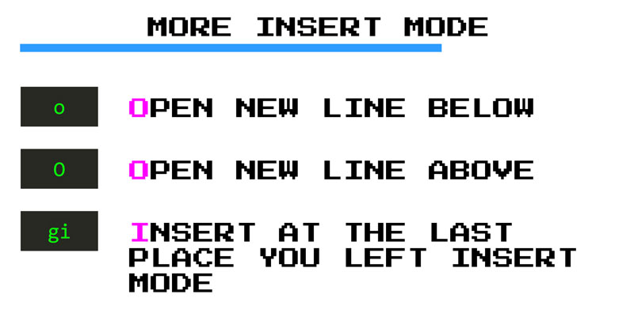

Insertar texto a la vim
Antes de editar un programa, alguien tendrá que escribirlo y esa persona puede ser tú. En Vim, escribes código en el modo Insertar. Has visto un poco del modo Insertar cuando usas el comando c, pero vamos a sumergirnos en este modo un poco más.
Hay dos comandos principales que te ponen en modo Insertar:
ipor inserto (insert)apor anexo (append)
El comando i de inserción te pone en modo de inserción antes del cursor. Mientras que el comando de anexión a te pone en modo de inserción después del cursor. A partir de entonces, estarás en modo Insertar y Vim se comportará como cualquier otro editor (¡ bienvenido de nuevo VSCode! ).
Al igual que con muchos otros comandos de Vim i y a tienen contrapartida en mayúsculas que son versiones más fuertes de inserción y anexión:
Ite pone en modo Insertar al comienzo de la línea actual mientras,Ate pone en modo Insertar al final.

Además de i y a, hay otros tres comandos súper útiles para colocarnos en modo Insertar:
oinserta una nueva línea debajo de la actual y lo coloca en el modo Insertar (mnemónico:one line below)Oinserta una nueva línea sobre la actual y también lo coloca en modo Insertargite pone en modo Insertar en el último lugar donde se dejó el modo Insertar. Esto es genial si abandonas el modo Insertar por error (o no) y quieres volver a donde estabas y continuar escribiendo.

Ok. Entonces, digamos que ahora estás en modo Insertar, tecleas y cometes un error (¡ay!). Algo así como un error tipográfico. ¿Vuelves al modo normal, arreglas el error tipográfico y vuelves al modo de inserción? ¡Por favor no!
Algunas veces. A menudo, es más rápido eliminar las letras o palabras incorrectas y escribir de nuevo. Hay un par de combinaciones de teclas que le permiten hacerlo directamente desde el modo Insertar:
CTRL-hte permite eliminar el último carácter que escribisteCTRL-wte permite eliminar la última palabra que escribisteCTRL-ute permite eliminar la última línea que escribiste
Eventualmente, querrás salir del modo Insertar y hacer otras cosas. Hay tres maneras de hacer esto: ESC, CTRL-[ y CTRL-C. De todos éstos, el más fácil de escribir es CTRL-C comenzar usando ese. En capítulos posteriores, aprenderemos cómo puede crear un mapeo personalizado que hará que salir del modo Insertar sea muy fácil.